Asia Family Trip — Taipei & East China亚洲家庭旅行 — 台北与华东
Wed, Sep 9Depart Seattle西雅图出发✈️ Travel day✈️ 旅行日
- 16:00 — Depart Seattle (SEA) on Delta DL69 to Taipei (A350-900, Main Cabin). Overnight flight.16:00 — 从西雅图机场 (SEA)搭乘 Delta DL69 前往台北（A350-900，Main Cabin）。夜间航班。
- DL69 departs SEA South Satellite (S gates, ~S12). Priority Pass lounge → The Club at SEA · South Satellite (mezzanine above gate S10, same concourse as your gate; 06:00–01:30; showers + quiet zones). Other PP lounge = The Club Concourse A (across A11, different concourse). Delta Sky Club is NOT Priority Pass.DL69 从 SEA 南卫星厅（S 登机口，约 S12）起飞。Priority Pass 休息室 → The Club at SEA · 南卫星厅（S10 登机口上方夹层，和登机口同一卫星厅、最近；06:00–01:30；有淋浴+安静区）。另一个 PP 休息室在 Concourse A（A11 对面，需换厅）；Delta Sky Club 不属于 Priority Pass。

① Seattle → ② Seattle–Tacoma (SEA)① 西雅图 → ② 西雅图机场 (SEA)
🧭 Open multi-stop route in Google Maps🧭 在 Google Maps 打开多点路线 ·


Thu, Sep 10Arrive Taipei — Taoyuan → hotel → night market抵达台北 — 桃园→酒店→夜市🛬 + 🍢 Ningxia🛬 + 🍢 宁夏
- 19:55 — Land Taoyuan (TPE) T2 (DL69). Immigration: Use the immigration lane appropriate to each travel document; carry the required originals. Bags → green customs channel (no meat).19:55 — 抵达桃园 (TPE) T2（DL69）。入境查验：按各自旅行文件选择正确的入境通道，并携带所需纸质原件。取行李→海关绿色通道（禁带肉制品）。
- Do 3 things in T2 arrivals before you leave (~21:00):
- ① EasyCard ×5 — 24h 7-Eleven / FamilyMart in arrivals (or EasyCard counter 08:00–22:00): NT$100（≈US$3）/card + top up NT$500–600（≈US$16–19） each; pay cash — EasyCard top-up is cash-only in Taiwan (cards can't add value), though the SIM counter below does take cards.
- ② Data — pre-installed eSIM: Settings → turn plan on + Data Roaming ON (works on landing). Else buy a SIM at Chunghwa / Taiwan Mobile (24h) with passport (5-day 5G ≈NT$600（≈US$19）).
- ③ Cash — Bank of Taiwan / Mega (24h, 1F, passport, NT$30（≈US$1） fee) change NT$10,000–15,000（≈US$316–474）; or ATM (decline DCC → charge in TWD). Full FX guide ↗
- ① 买悠游卡 EasyCard ×5 — 入境大厅 24h 7-11/全家（或电子票证柜台 08:00–22:00）：每张 NT$100（≈US$3） + 每张加值 NT$500–600（≈US$16–19）；加值只能付现金（全台悠游卡储值都不收信用卡；但下方电信柜台买 SIM 可刷卡）。
- ② 上网 — 已装 eSIM：设置里启用套餐 + 打开数据漫游（落地即用）；否则到 中华电信/台湾大哥大（24h）凭护照买卡（5G 5天 ≈NT$600（≈US$19））。
- ③ 换现金 — 台银/兆丰（24h、1F、凭护照、手续费 NT$30（≈US$1））换 NT$10,000–15,000（≈US$316–474）；或 ATM（拒绝 DCC、选新台币 TWD）。完整换汇方案 ↗
- 🚐 Airport transfer — recommended plan is a pre-booked Klook 7/8-seat private van for 5 pax + ~5 checked bags/carry-ons (NT$2,200–2,800 / US$71–90; meet & greet/name board + flight tracking + waiting time) → ~45–60 min door-to-door to hotel, check in ~22:15. Backup: KKday 7/8-seat (NT$2,850–3,000 / US$92–97); Uber/taxi/MRT only as fallbacks.🚐 接机 — 推荐提前订 Klook 7/8 座 private van，适合 5 人 + 约 5 件托运行李/随身（NT$2,200–2,800 / US$71–90；举牌接机+航班追踪+等待时间）→ 约45–60分钟门到门到酒店，约22:15 入住。备用：KKday 7/8 座（NT$2,850–3,000 / US$92–97）；Uber/taxi/MRT 仅兜底。
- 🏨 Stay: Hotel Resonance Taipei ✅ (Tapestry Collection by Hilton · No.7 Linsen S Rd, Zhongzheng · booked) — hotel notes ↗ · map ↗🏨 住宿：Hotel Resonance Taipei ✅（Tapestry Collection by Hilton · 林森南路7号, 中正区, 台北 · 已订）— 住宿说明 ↗ · 地图 ↗
- 🍢 ~22:40 — supper at Ningxia Night Market (closest, till ~23:30); first night 3–5 bites (oyster omelet, tofu pudding, lu-rou-fan).🍢 约22:40 — 宁夏夜市宵夜（离酒店最近，营业到约23:30）；第一晚只吃 3–5 样（蚵仔煎、豆花、卤肉饭）。

① Taoyuan Airport (TPE) → ② Hotel Resonance Taipei, Tapestry Collection by Hilton ✅ booked → ③ Ningxia Night Market① 桃园机场 (TPE) → ② Hotel Resonance Taipei, Tapestry Collection by Hilton ✅ 已订 → ③ 宁夏夜市
🧭 Open multi-stop route in Google Maps🧭 在 Google Maps 打开多点路线 ·


Fri, Sep 11NPM (Dragon Canon 12:00) → Tamsui Old Street + riverfront sunset故宫（龙藏经12:00）→ 淡水老街 + 河岸夕阳🏛️ + 🌅 Tamsui🏛️ + 🌅 淡水
- 10:00 — depart Hotel Resonance Taipei by 🚕 Uber (~25–35 min, ≈NT$350–500 / US$11–16) for the National Palace Museum; no MRT transfer needed.10:00 — 从 Hotel Resonance Taipei 🚕 Uber 出发去故宫博物院（约25–35分钟，约NT$350–500/US$11–16）；不需要换乘捷运。
- ~10:30 — enter the NPM North Branch using the ticket QR at the main gate. Important correction: 12:00 is the Dragon Canon room 103 reserved visit slot only, not the museum-entry time. Official FAQ: after successful purchase, other galleries in the First Exhibition Building can be visited freely at a convenient time. NPM is trialling extended hours 09:00–19:00 on Sep 11.约10:30 — 持票据 QR 在北院入口入闸。重要修正：12:00 是《龙藏经》103 展间预约参观时段，不是故宫北院入馆时间。官方 FAQ：第一展览馆内其余展间可于方便时段自由参观，不须另约。故宫9/11当天试行延长开放至09:00–19:00。
- 10:30–14:00 — National Palace Museum general galleries, about 3–3.5h: Jadeite Cabbage / Meat-shaped Stone (confirm on the day) → jade → bronzes → ceramics → your pick of painting/calligraphy. Don't try to see everything; take sitting breaks. Around 11:45–12:00, break off to Room 103 and queue for the Tibetan Dragon Canon — QR is used twice: scan once at the gate, then show it again at room 103. 🎫 NPM tickets (5 pax; Dragon Canon 12:00–13:00 room slot): paid and stored privately; no ticket files or links are included in the public page. 13:30–14:00 — light bite/rest inside the museum.10:30–14:00 — 故宫常设展约3–3.5小时：翠玉白菜/肉形石（当天先确认是否展出）→ 玉器 → 青铜器 → 陶瓷 → 你想看的书画展。不用全看完，中间安排坐下休息。约11:45–12:00 前往 103 陈列室 排队看《龙藏经》——QR 用两次：入闸门扫 1 次，进入 103 展间再出示 1 次。🎫 故宫票据 5 张（《龙藏经》103 展间 12:00–13:00 时段）：票据已付款并仅私人保存。13:30–14:00 — 馆内简单吃点东西/休息。
- 14:00 — 🚕 Uber straight from NPM to Tamsui Old Street (~35–50 min, ≈NT$550–800 / US$17–25); tell the driver the destination is the old street itself, not the MRT station.14:00 — 🚕 Uber 直接从故宫到淡水老街（约35–50分钟，约NT$550–800/US$17–25）；告诉司机目的地是老街本身，不是淡水捷运站。
- 14:45–17:00 — Tamsui Old Street: a-gei, fish-ball soup, iron eggs, fish crisps; pick up iron-egg/fish-crisp souvenirs.14:45–17:00 — 淡水老街：阿给、鱼丸汤、铁蛋、鱼酥；买铁蛋、鱼酥等伴手礼。
- 17:00–18:30 — walk the old street toward the river: Tamsui Old Street → Golden Waterfront → riverside promenade → sunset. If everyone still has energy, continue toward Fisherman's Wharf / Lover's Bridge; otherwise just enjoy the river sunset here.17:00–18:30 — 沿老街往河边走：淡水老街 → 金色水岸 → 淡水河岸 → 日落。体力允许可继续往渔人码头/情人桥；否则就在河边看夕阳，不用赶。
- 18:30–20:00 — Tamsui dinner + night old-street.18:30–20:00 — 淡水晚餐 + 夜间老街。
- Return to hotel by MRT, not Uber: Tamsui (R28) → Red Line → Taipei Main → one stop on the Blue Line → Shandao Temple, ~55–65 min, arriving ≈21:00.回程走捷运而不是 Uber：淡水（R28）→ 红线 → 台北车站 → 蓝线一站 → 善导寺，约55–65分钟，约21:00回酒店。
- 💰 Day total Uber: roughly NT$900–1,300 (≈US$28–41) for the two legs — this is a per-car estimate, not a quote; Uber Taiwan prices vary with demand/traffic, confirm in-app on the day.💰 当天 Uber 合计约 NT$900–1,300（约US$28–41），两段车程——此为预算估算，Uber 台湾实际价格随供需/车流动态变化，以当天 App 显示为准。

① Hotel Resonance Taipei, Tapestry Collection by Hilton ✅ booked → ② National Palace Museum → ③ Tamsui Old Street / riverfront① Hotel Resonance Taipei, Tapestry Collection by Hilton ✅ 已订 → ② 故宫博物院 → ③ 淡水老街/河岸
🧭 Open multi-stop route in Google Maps🧭 在 Google Maps 打开多点路线 ·

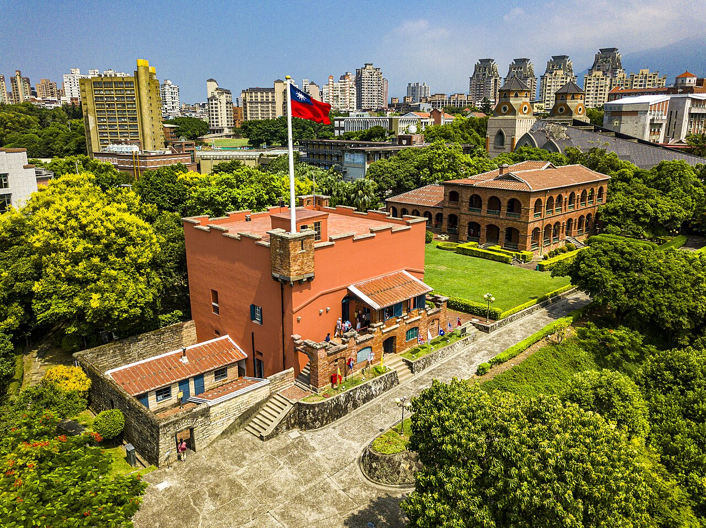
Sat, Sep 12Jiufen → Taipei 101 → Raohe Night Market — ACTIVE9/12 九份 → 台北101 → 饶河夜市 — ACTIVE 主线⛰️ + 🗼 + 🍢 Raohe⛰️ + 🗼 + 🍢 饶河
- ACTIVE PLAN: Jiufen old street → Taipei 101 observatory → Raohe Street Night Market. Beitou hot-springs and Yangmingshan below are fallback-only and are not active stops.当前主线：九份老街 → 台北101观景台 → 饶河街夜市。下方北投温泉和阳明山仅为备选，非当前实际行程。
- 07:30 wake, 08:00 breakfast, 08:30 — 🚕 Uber Hotel Resonance Taipei → Jiufen Old Street direct (~45–60 min, ≈NT$900–1,200 / US$28–38); this skips the Taipei Main → TRA → Ruifang → bus chain entirely.07:30 起床、08:00 早餐、08:30 — 🚕 Uber Hotel Resonance Taipei → 九份老街直达（约45–60分钟，约NT$900–1,200/US$28–38），完全绕开台北车站→台铁→瑞芳→公交这一串换乘。
- 09:20–09:30 — arrive Jiufen; most shops open around 10:00, so start with photos/views while stalls open, ahead of the midday tour-group crowds.09:20–09:30 — 抵达九份；多数店铺约10:00才开始营业，先拍照看景，避开中午旅行团高峰。
- 09:30–13:30 — Jiufen, ~4h: entrance → Jishan Street → taro balls → grass jelly cake → old-street shops → Shuqi Road → near A-Mei Tea House → mountain/sea views → tea house → street food for lunch. Start heading to the exit around 13:15.09:30–13:30 — 九份，约4小时：入口 → 基山街 → 芋圆 → 草仔粿 → 老街商店 → 竖崎路 → 阿妹茶楼附近 → 山海景色 → 茶馆喝茶 → 小吃当午饭。约13:15开始往出口走。
- 13:30 — 🚕 Uber Jiufen → Taipei 101 direct (~50–65 min, ≈NT$900–1,200 / US$28–38), arriving ≈14:30.13:30 — 🚕 Uber 九份 → 台北101直达（约50–65分钟，约NT$900–1,200/US$28–38），约14:30抵达。
- 14:30–15:30 — Taipei 101 mall/surrounds, photos. 15:30–17:30 — Taipei 101 observatory (daily 10:00–21:00, last entry 20:15; entrance moved to Office Tower 1F since 2026-07-01 — do not look for the old 5F entrance). Up to 89F for the 360° city view + the 660-ton tuned mass damper; consider timing the ride up to catch daylight fading into dusk.14:30–15:30 — 101商场、周边、拍照。15:30–17:30 — 台北101观景台（每日10:00–21:00，最后入场20:15；入口自2026-07-01起改到办公大楼1F，不要找旧的5F入口）。上89F看360°城市景观+660吨风阻尼球；如天气晴朗可以把上楼时间安排得稍晚，看白天渐入傍晚的变化。
- ⚠️ If visibility is poor when you arrive: skip the observatory for now (standard low-visibility tickets are non-refundable) — do Din Tai Fung + the 101 mall/department stores + Linjiang Street instead, and only go up later if it clears up.⚠️ 101 能见度差：先别上观景台（低能见度普通票不退款）→ 改鼎泰丰+101商场/百货+临江街，好转再补上去。
- 18:00 — 🚕 Uber Taipei 101 → Raohe Street Night Market (~15–20 min, ≈NT$200–300 / US$6–10).18:00 — 🚕 Uber 台北101 → 饶河街夜市（约15–20分钟，约NT$200–300/US$6–10）。
- 18:30–21:00 — Raohe Street Night Market dinner (open ≈17:00–00:00): pepper bun, grilled king oyster mushroom, oyster omelet, fried snacks, peanut-ice-cream roll, papaya milk. Din Tai Fung is intentionally skipped tonight — after Jiufen + 101 + Raohe grazing there won't be room for a sit-down meal too.18:30–21:00 — 饶河街夜市晚餐（营业约17:00–00:00）：胡椒饼、烤杏鲍菇、蚵仔煎、炸物、花生卷冰淇淋、木瓜牛奶。今晚不特意安排鼎泰丰——九份+101+饶河一路吃下来，坐下来吃正餐反而吃不动。
- Return to hotel by Uber or MRT, ≈21:00.回程打车或捷运，约21:00到酒店。
- If energy is low after Jiufen, the fallback swap is 101 → Linjiang/Tonghua Night Market instead (Uber ~5–10 min, right by 101) — but Raohe is the first choice for a first Taipei trip.如果九份回来体力不够，备选是改走 101 → 临江街/通化夜市（Uber约5–10分钟，就在101附近）——但作为第一次来台北，还是首选饶河。
- 💰 Day total Uber: roughly NT$2,000–2,700 (≈US$63–85) for the three legs — estimate only, confirm in-app.💰 当天 Uber 合计约 NT$2,000–2,700（约US$63–85），三段车程——仅供预算参考，以当天 App 价格为准。
- FALLBACK ONLY — Beitou hot-springs day: Beitou Hot Spring Museum + Thermal Valley short flat walk, private hot-spring room, low-intensity recovery day — swap in if weather/energy rules out Jiufen.备选（非当前主线）——北投温泉舒适日：北投温泉博物馆+地热谷短走、私汤、低强度恢复日——如遇天气/体力问题可切换为此方案。
- FALLBACK ONLY — Yangmingshan: short roadside stops at Xiaoyoukeng/Qingtiangang/Zhuzihu only; images illustrate locations, not guaranteed September weather or accessibility.备选（非当前主线）：阳明山仅做小油坑/擎天岗/竹子湖短停。下方开放授权图片只属于备选卡，不表示会实际前往。

XiaoyoukengJamesHuang002.jpg by James CPHuang, via Wikimedia Commons · source · CC BY-SA 4.0 
Qingtiangang Grassland, Taipei City, Taiwan.jpg by MarcChu, via Wikimedia Commons · source · CC BY 4.0 
Zhuzihu from the Xiaoyoukeng Trail.jpg by Connie, via Wikimedia Commons · source · CC BY-SA 2.0 XiaoyoukengJamesHuang002.jpg by James CPHuang, via Wikimedia Commons · source · CC BY-SA 4.0 Qingtiangang Grassland, Taipei City, Taiwan.jpg by MarcChu, via Wikimedia Commons · source · CC BY 4.0 Zhuzihu from the Xiaoyoukeng Trail.jpg by Connie, via Wikimedia Commons · source · CC BY-SA 2.0
{kind=link}
{kind=link}
{kind=link}

① Hotel Resonance Taipei, Tapestry Collection by Hilton ✅ booked → ② Jiufen Old Street → ③ Taipei 101 → ④ Raohe Street Night Market① Hotel Resonance Taipei, Tapestry Collection by Hilton ✅ 已订 → ② 九份老街 → ③ 台北101 → ④ 饶河街夜市
🧭 Open multi-stop route in Google Maps🧭 在 Google Maps 打开多点路线 ·


Sun, Sep 13Ximending shopping → Shanghai Hongqiao西门町采购 → 飞上海虹桥🛍️ + ✈️ + Qibao🛍️ + ✈️ + 七宝
- 08:30 pack/check out; hotel stores bags. Shopping route follows the map's numbered pins ①–⑥, walking north back toward the hotel with no backtracking: ① Carrefour Guilin Store (family/gift/snack run) → ② Watsons Ximen Store (skincare/toiletries) → ③ Ten Ren Tea (Ximen) (tea gift sets) → ④ Ximending / Red House (browsing/snacks/souvenirs, shops open around 11:00) → ⑤ Kuo Yuan Ye (Zhongshan branch) — traditional Chinese pastry house since 1867; buy gift-boxed suho pastries (酥饼), mooncakes/traditional cakes, and nougat/pastry assortments as take-home gifts; nearest branch to Ximending is at No. 34, Zhongshan N. Rd. Sec. 2 (~1 MRT stop north via Zhongshan Station), so visit it last on the walk/taxi back toward the hotel rather than detouring mid-shop. Take your time browsing — no spa/massage stop is booked, so this whole window is free for shopping.08:30 收拾/退房寄存行李；购物动线按地图①–⑥编号自北往酒店方向走，不走回头路：① 家乐福桂林店（家庭/伴手礼采购）→ ② 屈臣氏西门店（药妆/日用品）→ ③ 天仁茗茶（西门店）（茶叶伴手礼）→ ④ 西门町 / 西门红楼（逛街、小吃、伴手礼，商店约11:00起陆续营业）→ ⑤ 郭元益（中山门市）——创立于1867年的台湾传统糕饼老店，可选购酥饼礼盒、传统喜饼/中式糕饼、牛轧糖礼盒等伴手礼；离西门町最近的门市在中山北路二段34号（约需搭1站捷运至中山站），因此安排在购物动线最后、顺路往酒店方向走，不用中途绕路。不用赶时间，慢慢逛——今天不安排按摩/spa类项目，整段时间都留给购物。
- VAT refund: a designated TRS store generally requires at least NT$2,000（≈US$63） at the same store on the same day; present the required travel document and finish any airport procedure before checked baggage is surrendered.退税：同一家指定 TRS 店同日一般需满 NT$2,000（≈US$63）；购物时出示所需旅行文件，保留发票和商品，托运行李前完成机场所需步骤。
- 💰 Before departure: spend down leftover EasyCard + NT$ during the Ximen run and at TSA. If one card still has a bigger balance, you can refund it at any Taipei MRT Information Counter/EasyCard service point, but cards bought on arrival usually do not meet the 3-month + 5-use fee-waiver rule, so a NT$20（≈US$1） handling fee may apply and small residuals are usually better kept for the next Taiwan trip; spend coins before the airport, and use TSA only for last-minute banknote exchange/ATM if really needed.💰 离境前：上午逛西门和到 TSA 时顺手把剩余悠游卡余额与台币现金花掉最省事。若某张卡余额明显偏高，可在台北捷运任一旅客询问处/悠游卡服务点退卡退余额；但这批卡是到台北才新买的，通常不符合“满3个月且使用满5次免 NT$20（≈US$1） 手续费”的条件，所以小额尾数更建议直接留作下次来台继续用；硬币请在到机场前花完，TSA 只把它当成最后兜底的纸钞兑换/外币 ATM 方案。
- ⑥ Return to Hotel Resonance Taipei for luggage by about 12:25; leave for Songshan (TSA) T1 around 13:15 and target 13:40–14:00 arrival, preserving a large buffer. After international-departure security/immigration → Plaza Premium Lounge (Priority Pass), airside 3F near Gate 8 (escalator on the right up to Level 3, lounge on the left; open 05:30–20:00).⑥ 约12:25回 Hotel Resonance Taipei 取行李，13:15左右出发，13:40–14:00到松山 TSA T1，保留大缓冲；过国际出境安检/证照查验后 → Plaza Premium Lounge（Priority Pass），位于禁区内3楼近8号登机口（走右手边扶梯上3楼，贵宾室在左手边；开放05:30–20:00）。
- ✈️ China Eastern MU5098 Songshan (TSA) 17:15 → Shanghai Hongqiao (SHA) 18:55 (~1 h 40, booked).✈️ 东航 MU5098 松山 TSA 17:15 → 上海虹桥 SHA 18:55（约1h40，已订）。
- ~19:00 arrive Hongqiao → check in at Orange Hotel Shanghai Hongqiao Railway Station (Sep 13–14 booked, 2 rooms, suite rooms with breakfast, No. 51 Huaxiang Rd., Minhang). Do a Qibao Old Street light dinner/stroll only if Mom has energy. No Bund tonight. 🏨 hotel notes ↗ · detail: Shanghai-Hongqiao-Arrival.md ↗约19:00 抵虹桥 → 入住桔子上海虹桥火车站酒店（9/13–9/14 已订，2 间 1 晚，套房含早，闵行区华翔路51号）；若 Mom 体力允许，只做七宝老街轻晚餐/短逛；今晚不去外滩。🏨 住宿说明 ↗ · 细案：Shanghai-Hongqiao-Arrival.md ↗
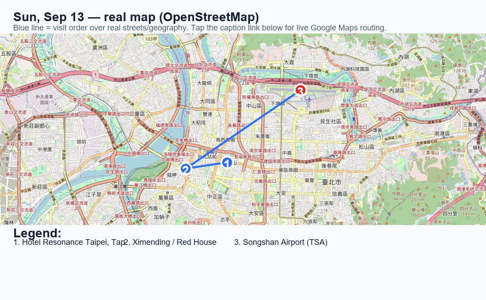
① Hotel Resonance Taipei, Tapestry Collection by Hilton ✅ booked → ② Carrefour Guilin Store → ③ Watsons Ximen Store → ④ Ten Ren Tea (Ximen) → ⑤ Ximending / Red House → ⑥ Kuo Yuan Ye (Zhongshan branch) → ⑦ Songshan Airport (TSA)① Hotel Resonance Taipei, Tapestry Collection by Hilton ✅ 已订 → ② 家乐福桂林店 → ③ 屈臣氏西门店 → ④ 天仁茗茶（西门店） → ⑤ 西门町 / 西门红楼 → ⑥ 郭元益（中山门市） → ⑦ 松山机场 (TSA)
🧭 Open multi-stop route in Google Maps🧭 在 Google Maps 打开多点路线 ·
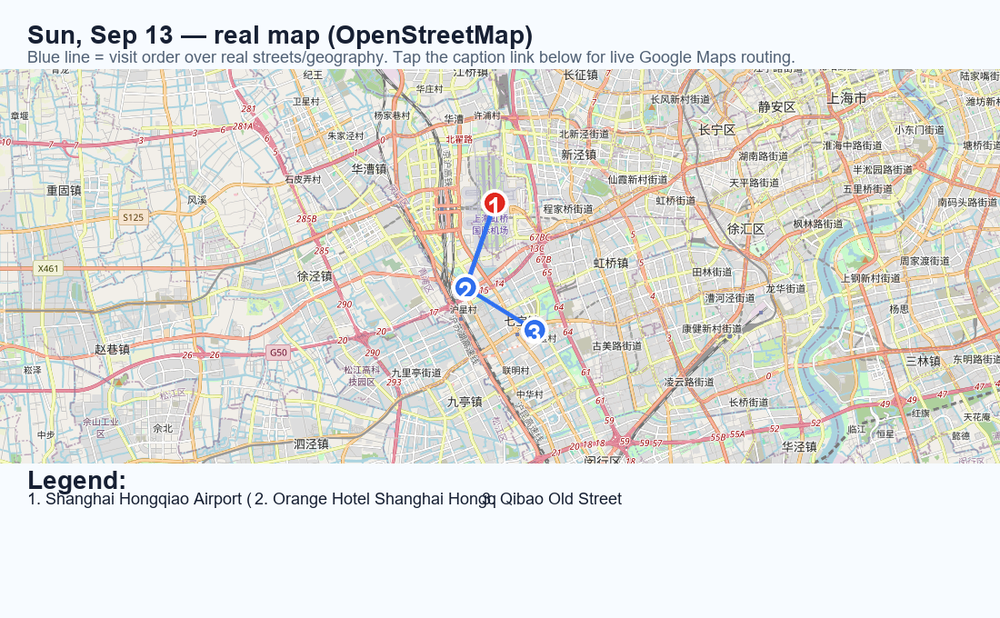
⑧ Shanghai Hongqiao Airport (SHA) → ⑨ Orange Hotel Shanghai Hongqiao Railway Station ✅ booked → ⑩ Qibao Old Street⑧ 上海虹桥机场 (SHA) → ⑨ 桔子上海虹桥火车站酒店 ✅ 已订 → ⑩ 七宝老街
🧭 Open multi-stop route in Google Maps🧭 在 Google Maps 打开多点路线 ·
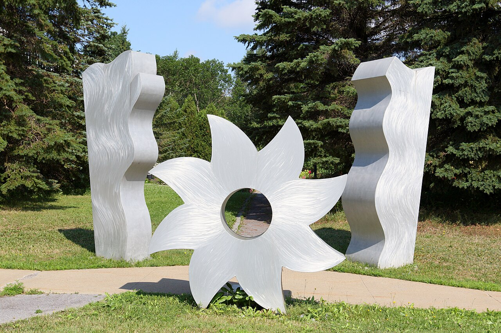
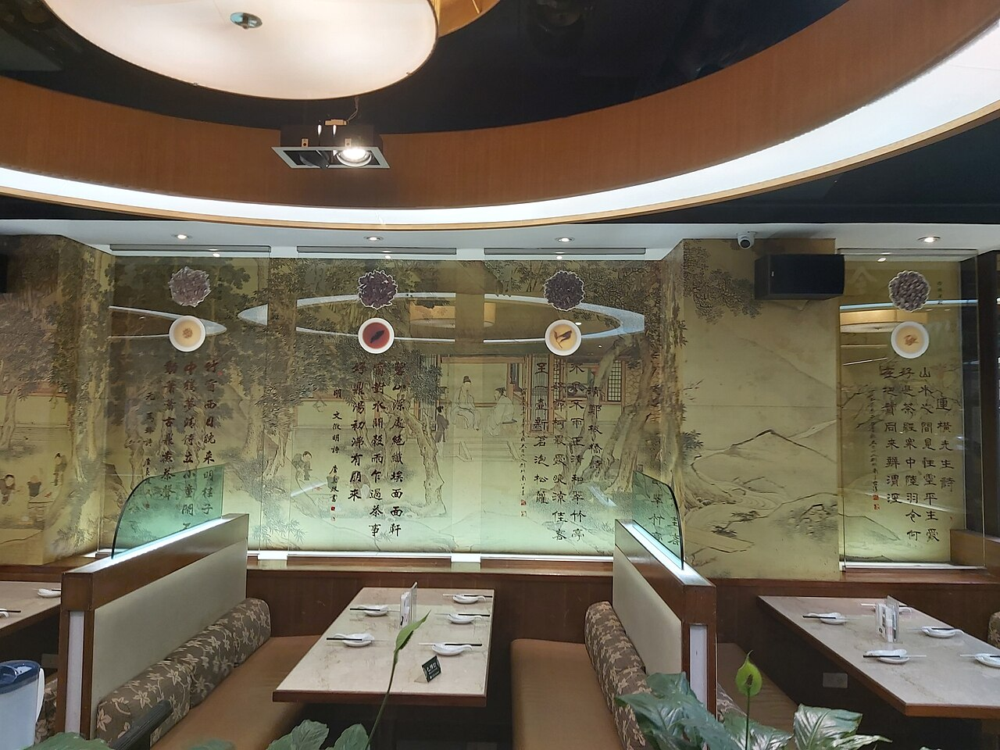

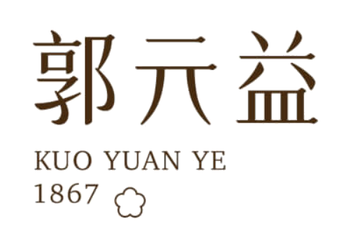


Mon, Sep 14Hongqiao → Suzhou old town虹桥 → 苏州老城🚄 Gardens · Shantang🚄 园林 · 山塘夜
- Numbers ②–⑨ below match the map pin order, so you can follow along side by side.下方数字②–⑨与地图标点顺序一一对应，可对照阅读。
- 🚄 ① Shanghai Hongqiao → ② Suzhou Station ✅ Booked (G8302, 08:52–09:19, Gate 28B, 1st Class Car 07 Seat 08C, Order #EK92820804); drop luggage at ③ Atour Hotel Suzhou Shantang Street Guangjinan Road Metro Station (Sep 14–15 booked, 1 family twin room with breakfast, No. 889 Ganjiang W. Rd., Gusu District).🚄 ①上海虹桥 → ②苏州站 ✅ 已订（G8302 08:52–09:19，检票口 28B，一等座 07车08C号，已支付 ￥67.0，订单号 EK92820804）；到后先去③苏州山塘街广济南路地铁站亚朵酒店放行李（9/14–9/15 已订，1 间 1 晚，尊享亲子双床房含早，姑苏区干将西路889号）。
- 08:20–10:20 ④ Humble Administrator's Garden → 10:25–10:40 ⑤ Suzhou Museum exterior only (adjacent, same corner of the old town). It is Monday and the museum interior is closed. Continue straight to ⑥ Master of the Nets Garden ~10:45–12:00, a short hop south, before doubling back toward the hotel side — this avoids the old zigzag of crossing the old town twice.08:20–10:20 ④拙政园 → 10:25–10:40 ⑤苏州博物馆仅看外观（紧邻拙政园）；9/14 是周一，馆内闭馆。随即南下至⑥网师园，约10:45–12:00，避免再折返老城另一端。
- 12:15–14:00 seated ⑦ Guanqian Street lunch, which also covers the midday rest — no separate hotel detour needed. 🍽️ Lunch picks (Guanqian St, pick 1): ① Songhelou (松鹤楼), Taijian Alley 72 — 200-yr-old Suzhou-cuisine flagship, signature squirrel-shaped mandarin fish; ② Deyuelou (得月楼), Taijian Alley 43 — classic sister restaurant, same dish plus stir-fried river shrimp; ③ Guso Family Banquet (姑苏家宴·苏帮菜) near Guanqian St — museum-linked, heritage-chef-run, garden-courtyard seating with occasional pingtan (评弹) performance.12:15–14:00 到⑦观前街坐下午餐，兼作午休，无需再绕回酒店。🍽️ 观前街午餐（选1家）：①松鹤楼（观前街店），太监弄72号——200多年苏帮菜老字号，招牌松鼠鳜鱼；②得月楼（观前街店），太监弄43号——同为百年苏帮宴席名店，响油鳝糊、得月童鸡也出名；③姑苏家宴·苏帮菜（观前街附近）——苏帮菜博物馆联名、非遗传承人主理，园林造景，偶有评弹表演。
- Late afternoon, head northwest to ⑧ Shantang Street — close to the hotel — for seated dinner, a canal cruise if operating, and only a 300–500 m illuminated stroll, then walk back to ⑨ Atour Hotel for the night. 🍽️ Dinner picks (Shantang St, pick 1): ① Guso Boat Banquet (姑苏船宴), near Baigong Ancestral Hall boat dock — dine aboard a lantern-lit canal boat while cruising, squirrel mandarin fish + osmanthus red-braised pork, book ≥3 days ahead (+86 175 2121 6208); ② Rongyanglou (荣阳楼) — century-old Shantang institution, homely classics like fried rice-flour dumplings and fresh-pork soup buns; ③ Old Suzhou Tea House (老苏州茶酒楼), canal-facing — pingtan storytelling with dinner, seasonal Yangcheng Lake hairy crab in autumn.傍晚往西北去⑧山塘街（离酒店最近）坐下晚餐，游船如运营则乘船，只走300–500米灯光精华段，随后步行回⑨亚朵酒店过夜。🍽️ 山塘街晚餐（选1家）：①姑苏船宴（山塘街店），白公祠附近游船码头旁——画舫上边吃苏帮大菜边游山塘河，需提前≥3天预约（电话 +86 175 2121 6208）；②荣阳楼（山塘街店）——百年老店，油氽团子、鲜肉汤包等市井家常味；③老苏州茶酒楼，面朝山塘河——边听评弹边用餐，秋季有阳澄湖大闸蟹时令菜。
- Tiger Hill is excluded: it needs roughly 2.5–4 hours plus 45–70 minutes of detour transport, with sloping/uneven paving and stairs unsuitable for Mom; cutting it keeps today's loop compact and non-backtracking. Detail: Suzhou-Day-Plan.md ↗虎丘删除：单独约2.5–4小时，另加45–70分钟绕行，斜坡/石路/台阶不适合Mom，删除后今日动线更紧凑不折返。详案：Suzhou-Day-Plan.md ↗

① Shanghai Hongqiao HSR → ② Suzhou Station → ③ Atour Hotel Suzhou Shantang Street Guangjinan Road Metro Station ✅ booked → ④ Humble Administrator's Garden → ⑤ Suzhou Museum → ⑥ Master of the Nets Garden → ⑦ Guanqian Street → ⑧ Shantang Street → ⑨ Atour Hotel Suzhou Shantang Street Guangjinan Road Metro Station ✅ booked① 上海虹桥站 → ② 苏州站 → ③ 苏州山塘街广济南路地铁站亚朵酒店 ✅ 已订 → ④ 拙政园 → ⑤ 苏州博物馆 → ⑥ 网师园 → ⑦ 观前街 → ⑧ 山塘街 → ⑨ 苏州山塘街广济南路地铁站亚朵酒店 ✅ 已订
🧭 Open multi-stop route in Google Maps🧭 在 Google Maps 打开多点路线 ·


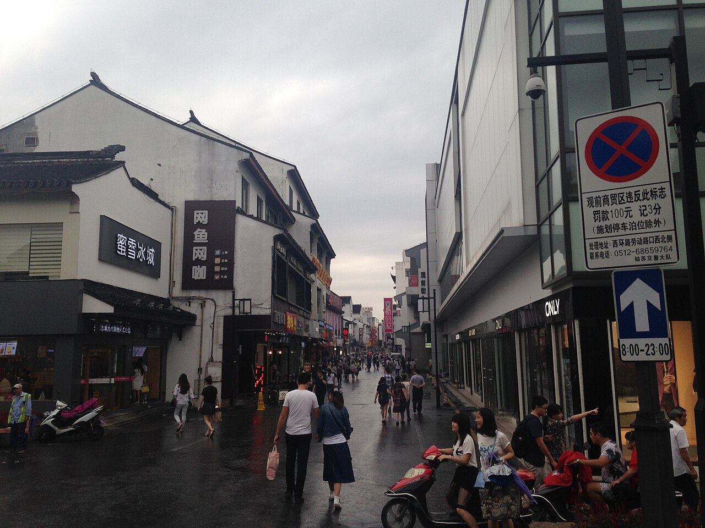

Tue, Sep 15Suzhou → Nanjing · museums + Qinhuai night苏州 → 南京 · 博物馆+秦淮夜🚄 + lantern boat🚄 + 画舫
- Numbers below (①–⑨) match the map pin order for this day — read them side by side.下方数字①–⑨与地图标点顺序一一对应，可对照阅读。
- ① Check out of Atour Hotel Suzhou → ② 🚄 morning HSR Suzhou Station → ③ Nanjing South; go straight to ④ UrCove Nanjing Downtown to drop luggage / check in (Sep 15–17 booked, confirmed, No. 187 S. Zhongshan Rd., Qinhuai District).①苏州亚朵酒店退房 → ②🚄早班高铁苏州站 → ③南京南站；直接前往④南京新街口逸扉酒店（UrCove Nanjing Downtown）放行李/入住（9/15–9/17 已订，确认号 #49929544，秦淮区中山南路187号）。
- If arrival timing permits, continue north to ⑤ Presidential Palace then ⑥ Nanjing Museum (paired as one out-and-back loop from the hotel); if delayed or tired, choose only one rather than compressing the evening.若到达时间允许，从酒店往北做⑤总统府→⑥南京博物院一段往返式串联；如晚点或疲劳则二选一，不压缩晚间休息。
- Return south for the evening loop, all within walking distance of the hotel: ⑦ Confucius Temple + Qinhuai River night boat → ⑧ Laomendong → ⑨ back to UrCove Nanjing Downtown. Detail: Nanjing-3Day-Plan.md ↗ · Day1 map ↗傍晚往南折返，晚间行程都在酒店步行范围内：⑦夫子庙 + 秦淮河画舫 → ⑧老门东 → ⑨返回逸扉酒店。详案：Nanjing-3Day-Plan.md ↗。

① Atour Hotel Suzhou Shantang Street Guangjinan Road Metro Station ✅ booked → ② Suzhou Station → ③ Nanjing South HSR → ④ UrCove Nanjing Downtown ✅ booked → ⑤ Presidential Palace of Nanjing → ⑥ Nanjing Museum → ⑦ Confucius Temple & Qinhuai River → ⑧ Laomendong Historic District → ⑨ UrCove Nanjing Downtown ✅ booked① 苏州山塘街广济南路地铁站亚朵酒店 ✅ 已订 → ② 苏州站 → ③ 南京南站 → ④ 南京新街口逸扉酒店 (UrCove Nanjing Downtown) ✅ 已订 → ⑤ 总统府 → ⑥ 南京博物院 → ⑦ 夫子庙·秦淮河 → ⑧ 老门东 → ⑨ 南京新街口逸扉酒店 (UrCove Nanjing Downtown) ✅ 已订
🧭 Open multi-stop route in Google Maps🧭 在 Google Maps 打开多点路线 ·

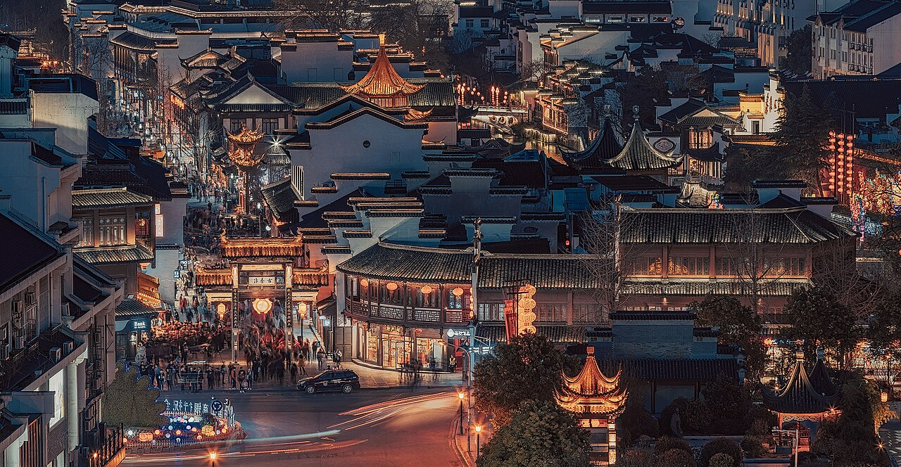


Wed, Sep 16Nanjing full-day upscale bathhouse南京全日高端洗浴中心♨️ 10:00–20:30♨️ 10:00–20:30
- 10:00–20:30 — No. 9 Hot Spring Life Center (Nanjing), the selected full-day upscale bathhouse. Baths, sauna/steam, common lounge/cinema/games, optional massage/private room and long recovery blocks for Mom.10:00–20:30 九号汤泉生活馆（南京店）：泡浴/桑拿、公共休息区/影院/游戏，可选按摩或包间，给Mom充分休息。
- The reported weekday 18-hour package is about ¥380 and includes breakfast, late-night food, and either lunch or dinner; verify which main meal is included and the second-meal surcharge before paying.公开资料显示工作日18小时套餐约¥380，含早餐、夜宵及午餐或晚餐之一；付款前确认包含哪顿正餐及第二顿加价。
- Verified seafood reports mention oysters, abalone, hairy crab, salmon/sashimi and tiger prawns; supply changes daily. Wet areas are gender-separated; the family regroups in uniformed common areas. Detail: Nanjing-3Day-Plan.md ↗ · Day2 map ↗已核实海鲜报道包括生蚝、鲍鱼、大闸蟹、三文鱼/刺身、虎虾；每日供应会变。湿区男女分开，穿馆服后在公共区会合。

① UrCove Nanjing Downtown ✅ booked → ② No. 9 Hot Spring Life Center → ③ UrCove Nanjing Downtown ✅ booked① 南京新街口逸扉酒店 (UrCove Nanjing Downtown) ✅ 已订 → ② 九号汤泉生活馆（南京店） → ③ 南京新街口逸扉酒店 (UrCove Nanjing Downtown) ✅ 已订
🧭 Open multi-stop route in Google Maps🧭 在 Google Maps 打开多点路线 ·
Thu, Sep 17Nanjing South → Zhejiang Taizhou → Linhai (Xin Rong Ji lunch)南京南 → 浙江台州 → 临海（新荣记午餐已订）🚄 + 🍽️ confirmed🚄 + 🍽️ 已确认
- After breakfast/check-out, go directly to ① Nanjing South. Preferred station is now ② Linhai Station, not Taizhou West — Linhai Station is only ~7 km / 20-25 min from Xin Rong Ji, vs. ~47 km / ~50 min from Taizhou West. Target train window: e.g. G7469/G7472 Nanjing South 08:27 → Linhai 11:56 (~3h29m); re-check on 12306 nearer the date for the best available train.早餐退房后直接去①南京南站。推荐改到②临海站下车，不再是台州西站——临海站离新荣记只有约7公里/20-25分钟，台州西站则约47公里/50分钟。目标车次：如G7469/G7472 南京南08:27发车，临海11:56到站（约3小时29分）；出发前请再上12306复核最优车次。
- 🍽️ From Linhai Station, it's just ~7 km / 20-25 min to ③ Xin Rong Ji, Linhai for the confirmed 13:15 lunch, party of 5 (deposit paid; concierge 0576-85117888) — do not detour to the Jiaojiang hotel first.🍽️ 临海站下车后直接打车去③新荣记（约7公里/20-25分钟），13:15午餐5人已确认（订金已付，管家电话0576-85117888）——不再先绕去椒江酒店。
- Afternoon in Linhai (reordered to avoid backtracking — Ziyang St. is right by the restaurant, then head outward to the lake and temple): ④ Ziyang Street short 500–800 m stretch, right by Xin Rong Ji → ⑤ Linhai East Lake flat lakeside section → low courtyards of ⑥ Longxing Temple.下午在临海（调整顺序避免来回折返——紫阳街就在餐厅旁边，再依次往外走到湖边和寺庙）：④紫阳街500–800米短段（就在新荣记旁）→ ⑤临海东湖平缓湖岸 → ⑥龙兴寺低处院落。
- Return to ⑦ Hilton Taizhou in Jiaojiang in the evening (about 55–75 min) for rest; keep dinner simple/at the hotel. Day3 map ↗傍晚返回椒江⑦台州希尔顿（约55–75分钟）休息，晚餐从简/酒店内解决。
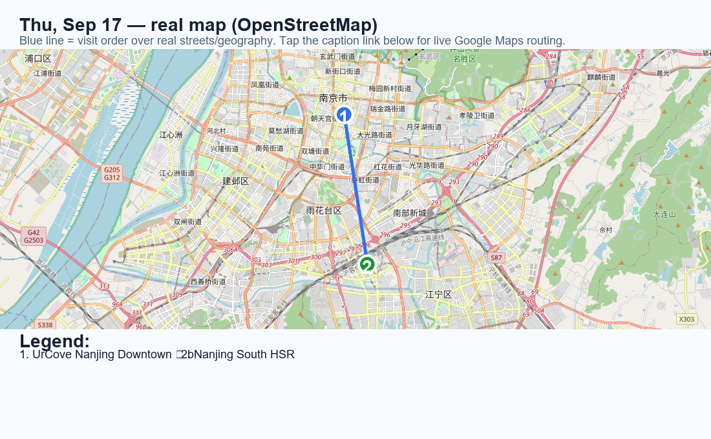
① UrCove Nanjing Downtown ✅ booked → ② Nanjing South HSR① 南京新街口逸扉酒店 (UrCove Nanjing Downtown) ✅ 已订 → ② 南京南站
🧭 Open multi-stop route in Google Maps🧭 在 Google Maps 打开多点路线 ·
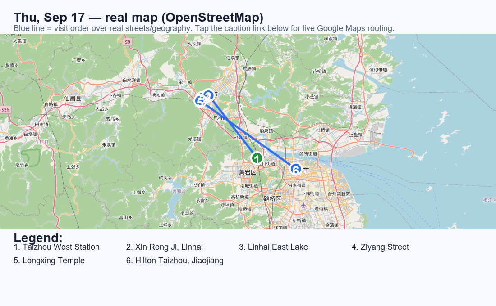
③ Linhai Station → ④ Xin Rong Ji, Linhai → ⑤ Ziyang Street → ⑥ Linhai East Lake → ⑦ Longxing Temple → ⑧ Hilton Taizhou, Jiaojiang③ 临海站 → ④ 新荣记（临海店） → ⑤ 紫阳街 → ⑥ 临海东湖 → ⑦ 龙兴寺 → ⑧ 台州希尔顿（椒江）
🧭 Open multi-stop route in Google Maps🧭 在 Google Maps 打开多点路线 ·
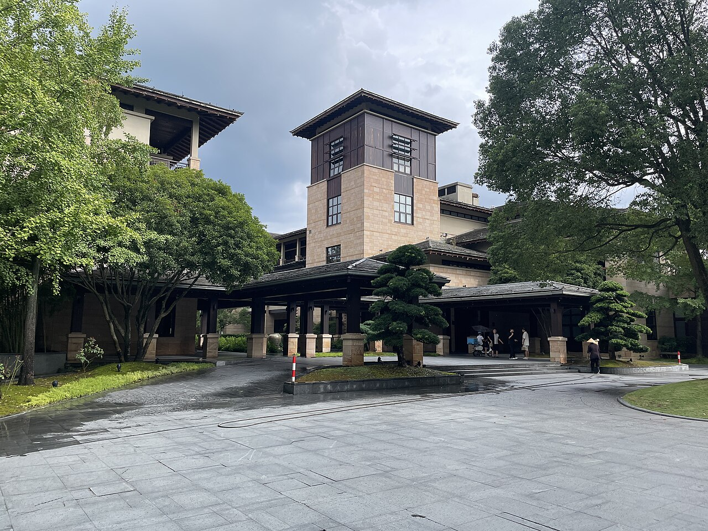

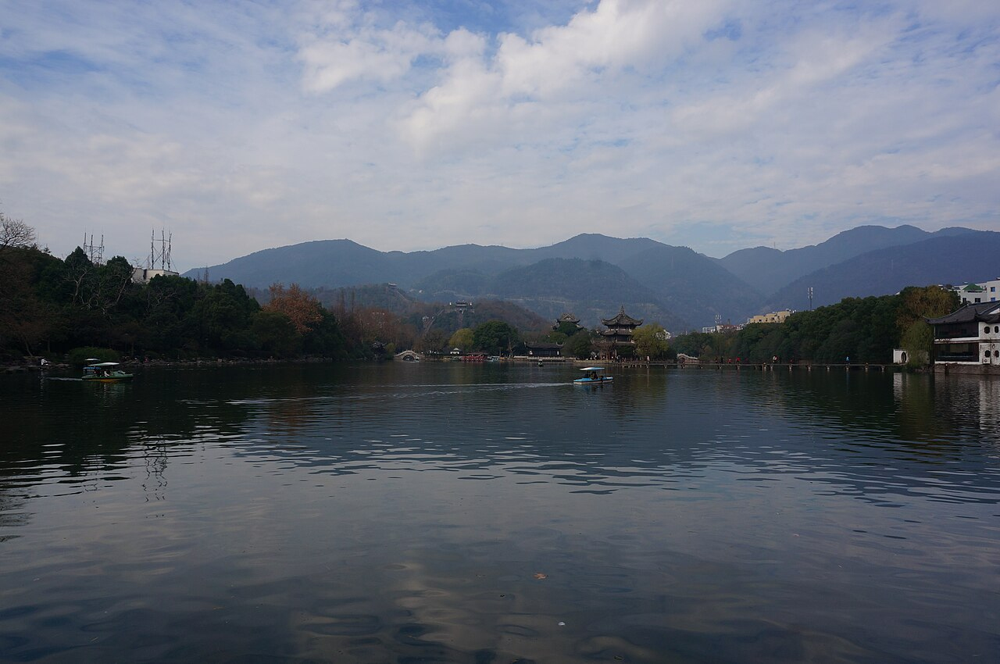
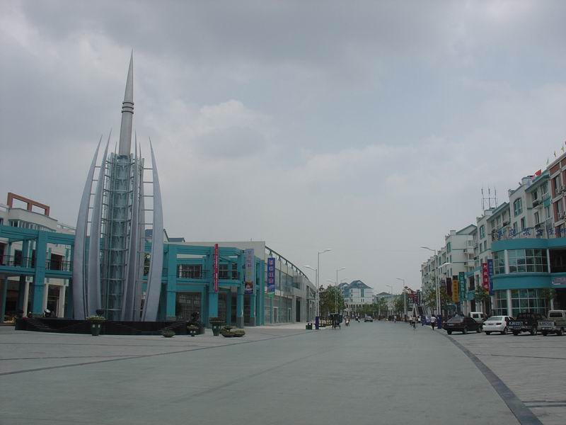
Fri, Sep 18Jiaojiang → Shitang Peninsula e-bike day (Taizhou Plan B)椒江 → 石塘半岛骑电动车一日游（台州方案B）🛵 Shitang🛵 石塘
- Upgraded from the old "just rest in Jiaojiang" plan to a real day-trip: Jiaojiang → Shitang Peninsula (石塘半岛), Wenling by rented e-bike. Shitang is a different district of Taizhou from Jiaojiang — best available estimate is ~1.5–2h each way by car (per prior Taizhou-district research: ~55–75 min Jiaojiang→Wenling city + further to Shitang town; the earlier "1h10min" figure was actually for Linhai↔Wenling, not Jiaojiang↔Shitang — re-check on a map/rideshare app closer to the date). Fallback: anyone who'd rather just rest can stay at the hotel/spa instead — this whole day is optional, not mandatory.从原来「椒江纯休整」方案升级为真正的一日游：椒江 → 温岭石塘半岛骑电动车一日游。石塘与椒江（台州希尔顿所在区）是台州下辖的不同区县，目前最可靠的估算是单程约1.5–2小时车程（依据此前台州各区县研究稿：椒江→温岭市区约55–75分钟，再到石塘镇更远；此前提到的「1小时10分」实为临海↔温岭车程，并非椒江↔石塘，出发前请再用地图/打车软件复核）。备选：如果只想纯休息，也可以留在酒店/做理疗，今天整体是可选项，不强制外出。
- Plan B (preferred, lower effort): taxi Jiaojiang → a Shitang guesthouse (~1.5–2h; if arriving by rail instead, reportedly ≈80 RMB/45 min from Wenling HSR Station), drop bags, then rent an e-bike right at the guesthouse door — several Shitang guesthouses reportedly rent e-bikes on-site (as reported/unverified — confirm on arrival: 温岭石塘禧悦民宿, 吾家小院, 臻之小筑, or the recommended 琳朵艺术空间·海景美宿（石塘七彩小岛店） near Xiaoruo, ~3 min walk to Dongdaozhu), or from a local shop in town (as reported/unverified: 珂徕出行威哥租车电动车租赁 on 马北路, 24h; 小王金箭电瓶车修理出租 on 冠平路, 08:00–21:00). Choose a 48V large-battery/hill-climbing model (80–100 km range) — enough for the whole peninsula loop.方案B（推荐，更省心）：打车椒江 → 石塘民宿（约1.5–2小时；若改从温岭高铁站出发，据称约80元/45分钟），放下行李后直接在民宿门口租电动车——据称多家石塘民宿可现场租车（用户提供、未逐一核实，抵达后请确认：温岭石塘禧悦民宿、吾家小院、臻之小筑，或推荐的琳朵艺术空间·海景美宿（石塘七彩小岛店），就在小箬村附近，步行约3分钟到东岛主）， 或在镇上租车行租（未核实：马北路「珂徕出行威哥租车电动车租赁」24小时营业；冠平路「小王金箭电瓶车修理出租」08:00–21:00）。选48V大电瓶爬坡款（续航80–100公里），足够绕完整个半岛。
- Rental terms (as reported, verify on the day): weekday ≈50 RMB/24h, weekend/peak ≈60 RMB/24h (hourly ≈12 RMB/h isn't worth it vs. the day rate); ID card required; Sesame Credit (芝麻信用分) ≥650 can waive the deposit, otherwise ≈200 RMB cash deposit, refunded in full on return if undamaged. Plan A (alternative, no taxi): rent at 绿津骑行·电动车租赁 (温岭火车站店) near Wenling HSR Station (reported ≈120 RMB/2-day battery-swap/long-range model — real rental shop, confirm current price) and ride the whole ~40 km Wenling Station→Shitang route yourself on a national highway with more traffic; must be a long-range model, and the bike has to be returned to the same station-side shop (no one-way drop-off in Shitang) — inconvenient for this itinerary, so Plan B is the primary recommendation.租车条件（用户提供，出发前请核实）：工作日约50元/24小时，周末/旺季约60元/24小时（按小时约12元/小时不划算）；需带身份证；芝麻信用分≥650可免押金，否则现金押金约200元，车辆完好归还全额退还。方案A（备选，不打车）：在温岭火车站附近的「绿津骑行·电动车租赁（温岭火车站店）」租车（据称约120元/2天、换电池长续航款——确认为真实存在的当地租车行，具体价格请核实）自己骑约40公里的温岭站→石塘国道，车流更大，必须选长续航款，且车必须还到同一家车站门店（不能在石塘单程还车），对本行程不太方便，所以主推方案B。
- Visiting order (verified route, west→east along the coast, no backtracking, numbered to match the map pins): ① Hilton Taizhou, Jiaojiang (depart) → ② 东岛主海鲜大排档 Dongdaozhu Seafood (lunch/early meal, right across from Xiaoruo Village — verified as a real, well-reviewed local seafood spot; exact address as reported: 温岭市石塘镇东海村鑫海13号, confirm on arrival) → ③ 小箬村 Xiaoruo Village / 七彩渔村 "Rainbow Fishing Village" (~3 min walk over — verified: colorful hillside houses, flat/easy walking; 麒麟山 Qilin Hill inside the village is a short staircase, not real hiking, and is the best photo/sunset overlook of the village) → ④ ~15 min e-bike/car east along the coastal road to the 对戒观景平台 Duijie ("Couple's Ring") viewing platform for sunset (verified real spot at 五岙村; car/e-bike reaches a parking area, then ~10–15 min walk up — some steps, non-slip shoes recommended) → ⑤ return e-bike, taxi back to Hilton Taizhou, Jiaojiang. (Note: all three Shitang stops — Dongdaozhu, Xiaoruo, Duijie — sit within the broader Shitang Peninsula tourist area, so it isn't shown as its own numbered stop.)游览顺序（已核实真实路线，沿海岸自西向东，无需走回头路，编号与地图大头针一致）：① 台州希尔顿（椒江）（出发）→ ② 东岛主海鲜大排档（用餐，就在小箬村对面——已核实为真实存在、口碑不错的当地海鲜大排档；报告地址温岭市石塘镇东海村鑫海13号，抵达后请核实门牌）→ ③ 小箬村/七彩渔村（步行约3分钟——已核实：彩色房屋依山而建，地势平坦好走；村内麒麟山只是一段短台阶，不是真正爬山，是俯瞰全村与海景/看日落的最佳机位）→ ④ 沿海岸公路骑电动车/开车向东约15分钟到对戒观景平台看日落（已核实为五岙村真实景点；车/电动车到停车场后步行约10–15分钟上平台，部分路段有台阶，建议穿防滑鞋）→ ⑤ 还车，打车返回台州希尔顿（椒江）。（说明：东岛主、小箬村、对戒观景平台这三站都在「石塘半岛」这一片大区域内，故不再把「石塘半岛」单列为一个编号站点。）
- Rough day timing (own estimate, adjust once drive time is confirmed): depart Hilton Taizhou ≈08:00–08:30 → arrive Shitang ≈09:30–10:30 → rent bike, ride/eat at Dongdaozhu + explore Xiaoruo late morning–afternoon → ride to Duijie platform in time for sunset (~18:00–18:30 in mid-Sep) → return e-bike → taxi back to Jiaojiang, arriving ≈20:30–21:30. This is a full, long day — confirm everyone (especially Mom) is up for the round-trip car time before locking it in.大致时间安排（本文估算，实际车程确认后请调整）：约08:00–08:30 从台州希尔顿出发 → 约09:30–10:30 抵达石塘 → 租车后在东岛主用餐、逛小箬村（上午晚些到下午）→ 骑往对戒观景平台赶9月中旬约18:00–18:30的日落 → 还车 → 打车返回椒江，约20:30–21:30到酒店。这是很长的一天——落定前先确认包括Mom在内大家都能接受来回车程。
- Safety/pitfalls: always inspect and photograph the bike's brakes/body condition before riding off, to avoid deposit disputes at return; a helmet is legally required and traffic police do check — don't skip it; pick a two-person/hill-climbing-capable model since Shitang's coastal sections are hilly and underpowered bikes struggle.安全/避坑提示：取车前务必检查并拍照记录刹车/车身状况，避免还车时押金纠纷；骑电动车必须戴头盔，交警会查，别省这一步；选双人/爬坡款，石塘沿海路段有坡，动力不足的车会吃力。
- Full write-up with both rental plans, all addresses, pricing and procedure: Taizhou-Shitang-Ebike-Plan.md ↗. Dinner: back in Jiaojiang, local seafood (unchanged from the old plan).两套方案的完整地址、流程与更多细节见：Taizhou-Shitang-Ebike-Plan.md ↗。晚餐：返回椒江后吃本地海鲜（与原计划一致）。

① Hilton Taizhou, Jiaojiang → ② Dongdaozhu Seafood (东岛主海鲜大排档) → ③ Xiaoruo Village / "Rainbow Fishing Village" (小箬村/七彩渔村) → ④ Duijie ("Couple's Ring") Viewing Platform → ⑤ Hilton Taizhou, Jiaojiang① 台州希尔顿（椒江） → ② 东岛主海鲜大排档 → ③ 小箬村 / 七彩渔村 → ④ 对戒观景平台 → ⑤ 台州希尔顿（椒江）
🧭 Open multi-stop route in Google Maps🧭 在 Google Maps 打开多点路线 ·
Sat, Sep 19Zhejiang Taizhou → central Shanghai · Bund night台州 → 上海市中心 · 外滩夜🚄 + skyline🚄 + 天际线
- 🚄 ① Depart from Taizhou Station (not Taizhou West), which is close to Jiaojiang/Hilton Taizhou. Prefer a direct train leaving about 09:30–12:00; final choice after 12306 sales open.🚄 ① 从台州站出发（非台州西站），紧邻椒江/台州希尔顿。优先选约09:30–12:00发车的直达车次，12306开售后再定。
- 🚄 ② Arrive Shanghai Hongqiao Railway Station — this is the HSR terminus for the Taizhou line, on the western edge of the city, not central Shanghai. Transfer by metro/taxi (~45–60 min) to the central-Shanghai hotel to drop bags before heading out for the evening.🚄 ② 抵达上海虹桥站——这是台州线高铁的终点站，位于上海西部，并非市中心。需换乘地铁/打车（约45–60分钟）前往上海市中心酒店放行李。
- ③ Check in at the central Shanghai hotel (Waldorf Astoria on the Bund / Conrad / equivalent) and rest briefly. 🏨 hotel notes ↗③ 入住上海市中心酒店（外滩华尔道夫 / Conrad / 同级），稍作休息。🏨 住宿说明 ↗
- Evening: ④ The Bund riverfront promenade → ⑤ Lujiazui skyline across the river. This is the real Shanghai skyline night; keep it flat and photo-focused, optionally add a Huangpu River night cruise, then ⑥ return to the same central-Shanghai hotel to sleep.晚上：④ 外滩滨江步道 → ⑤ 隔江眺望陆家嘴天际线。这晚才是正式上海夜景；全程平地拍照，可选黄浦江夜游船，之后⑥返回同一家市中心酒店过夜。

① Hilton Taizhou, Jiaojiang → ② Taizhou Station → ③ Shanghai Hongqiao HSR → ④ Central Shanghai hotel area → ⑤ The Bund → ⑥ Lujiazui Skyline → ⑦ Central Shanghai hotel area① 台州希尔顿（椒江） → ② 台州站 → ③ 上海虹桥站 → ④ 上海市中心酒店区 → ⑤ 外滩 → ⑥ 陆家嘴天际线 → ⑦ 上海市中心酒店区
🧭 Open multi-stop route in Google Maps🧭 在 Google Maps 打开多点路线 ·

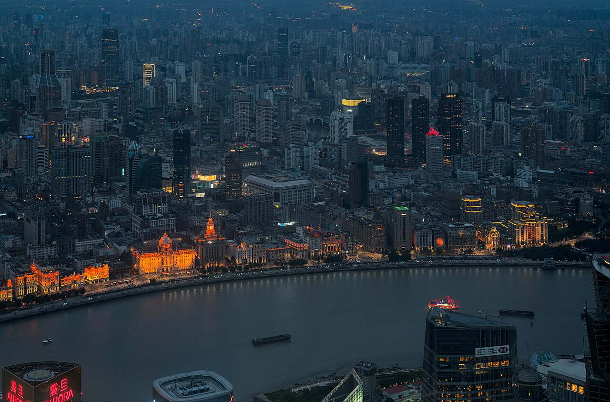


Sun, Sep 20Central Shanghai → Pudong (PVG) → Seattle上海市中心 → 浦东 PVG → 西雅图🛫 Fly home🛫 回家航班
- Morning — easy central Shanghai breakfast / final shopping. No long-distance rail today.上午 — 上海市中心早餐/最后购物；今天不排长途高铁。
- Move from central Shanghai to Pudong Airport (PVG) with a large time buffer; target ~14:00 at PVG.上海市中心 → 浦东机场 PVG，留足堵车缓冲；目标约14:00 到 PVG。
- ✈️ Delta DL280 PVG 17:30 → Seattle same-day 13:50. Home ✅.✈️ Delta DL280 PVG 17:30 → 西雅图同日 13:50。回家 ✅。

① Central Shanghai hotel area → ② Shanghai Pudong (PVG)① 上海市中心酒店区 → ② 浦东机场 (PVG)
🧭 Open multi-stop route in Google Maps🧭 在 Google Maps 打开多点路线 ·

Shanghai🍜 Shanghai Eats & Sights — 24 saved spots (by district)🍜 上海美食·景点 — 收藏 24 处（按区）Food美食
From your Google list ‘上海吃喝玩乐’ (dianping探店 picks), de-duplicated against the main Shanghai days.来自你的 Google 收藏『上海吃喝玩乐』（大众点评探店），已与上海主行程去重。
Weave these into the last two Shanghai days by district; pins use exact coordinates.按区穿插到最后两天上海行程；图钉为精确坐标。
Huangpu · Bund / Nanjing Rd黄浦·外滩/南京路
Jing'an · West Nanjing Rd静安·南京西路
Xuhui · Former French Concession徐汇·衡复风貌区
Hongkou · North Bund虹口·北外滩
Pudong · Lujiazui浦东·陆家嘴
Info参考Where we stay — hotel notes per city🏨 住宿（各城 · 点开看选择说明）住宿住宿
每城住宿的选择理由 / 地址 / 备选见专门文档 master-plan-hotel.md（下方渲染版可直接跳到对应城市）：
- 🗺️ 台北选址交互地图：已订 Hotel Resonance Taipei + 此前候选 + 你全部台北标记同图比位置 — hotels map ↗选址地图 ↗
- 🏨 台北 · Hotel Resonance Taipei ✅ 已订（Tapestry Collection by Hilton · 林森南路7号, 中正区, 台北 · 已订）— hotel notes ↗选择说明 ↗
- 🏨 上海虹桥抵达夜 · 桔子上海虹桥火车站酒店 ✅ 已订（9/13–9/14，2 间 1 晚，套房含早，闵行区华翔路51号；七宝老街轻晚餐）— hotel notes ↗选择说明 ↗ · Shanghai-Hongqiao-Arrival.md ↗
- 🏨 苏州 · 苏州山塘街广济南路地铁站亚朵酒店 ✅ 已订（9/14–9/15，1 间 1 晚，尊享亲子双床房含早，姑苏区干将西路889号）— hotel notes ↗选择说明 ↗ · Suzhou-Day-Plan.md ↗
- 🏨 南京 · 南京南京中心逸扉酒店 (UrCove Nanjing Downtown) ✅ 已订（9/15–9/17，2 晚，高级大床房，确认号 #49929544，秦淮区中山南路187号）— hotel notes ↗选择说明 ↗ · Nanjing-3Day-Plan.md ↗
- 🏨 浙江台州 · 台州希尔顿（椒江）连住两晚 ⏳ 待预订（9/17–9/19，开渔海鲜+紫阳街）— hotel notes ↗选择说明 ↗
- 🏨 上海市中心 · 外滩/人民广场 ⏳ 待预订（9/19–9/20，1 晚，离境前外滩夜景）
- 🏨 杭州 · 未采用/备选（Canopy 西湖 / Conrad；本锁定主线已删除杭州日）— archived notes ↗备选说明 ↗
Info参考Full 10-Night Hotel Reservation Status Audit📊 全行程 10 晚酒店预订状态梳理（随预订实时更新）预订汇总预订汇总
全行程共 10 晚：已锁定 7 晚 ✅ · 待预订 3 晚 ⏳（随预订进度实时更新与同步）：
| 日期 / 晚数 | 城市 / 区域 | 酒店名称 & 地址 | 预订状态 | 房间与确认信息 |
|---|---|---|---|---|
| 9/10 – 9/13 (3 晚) | 台北 中正区 / 善导寺 | Hotel Resonance Taipei Tapestry Collection by Hilton · 台北市中正区林森南路 7 号 | ✅ 已预订 | 2 间房 3 晚 · 希尔顿官方预订已锁房 |
| 9/13 – 9/14 (1 晚) | 上海虹桥 闵行区 / 虹桥枢纽 | 桔子上海虹桥火车站酒店 闵行区华翔路 51 号 | ✅ 已预订 | 2 间房 1 晚（套房含早）· 七宝老街轻晚餐 |
| 9/14 – 9/15 (1 晚) | 苏州 姑苏区 / 山塘街 | 苏州山塘街广济南路地铁站亚朵酒店 姑苏区干将西路 889 号 | ✅ 已预订 | 1 间房 1 晚（尊享亲子双床房含早） |
| 9/15 – 9/17 (2 晚) | 南京 秦淮区 / 新街口 | 南京南京中心逸扉酒店 UrCove Nanjing Downtown · 秦淮区中山南路 187 号 | ✅ 已预订 | 1 间高级大床房 2 晚（CN¥1,528 总价） 确认号：#49929544 |
| 9/17 – 9/19 (2 晚) | 浙江台州 椒江区 / 高铁新区 | 台州希尔顿酒店 Hilton Taizhou · 椒江区闻学路 88 号 | ⏳ 待预订 | 连住 2 晚 · 建议 Hilton 官方订 2 间房（离台州站 10–20 分钟） |
| 9/19 – 9/20 (1 晚) | 上海市中心 黄浦区 / 外滩 | 上海华尔道夫 / 康莱德 / 市中心备选 外滩 / 人民广场片区 | ⏳ 待预订 | 1 晚 · 体验外滩夜景与离境机场缓冲 |
📌 选址与房型说明：详细备选分析见 Hotel-Selection.html ↗ 及 master-plan-hotel.md ↗。
Info参考Full 4-Segment HSR Train Reservation Status Audit🚄 华东段高铁车次预订状态梳理（共 4 程）高铁预订高铁预订
华东段高铁共 4 程：已预订 1 程 ✅ · 待预订 3 程 ⏳（随预订进度实时更新与同步）：
| 日期 | 行程区间 | 计划车次 / 时段 | 预订状态 | 座位 / 检票口 / 订单信息 |
|---|---|---|---|---|
| 9/14 周一 | 上海虹桥 → 苏州站 | G8302 08:52 – 09:19 |
✅ 已预订 | 一等座 07车08C号 · 检票口 28B 订单号：EK92820804（已支付 ￥67.0） |
| 9/15 周二 | 苏州站 → 南京南站 | 早班车 建议 08:30–09:30 发车 |
⏳ 待预订 | 约 8/31 开售 · 为南京城中博物馆/秦淮夜留时间 |
| 9/17 周四 | 南京南站 → 台州西站 | 08:00–08:15 发车 11:30–12:00 到站 (参考 G7665 08:13→11:52) |
⏳ 待预订 | 约 9/03 开售 · 必须到台州西站（直接包车赶临海新荣记 13:15 午餐） |
| 9/19 周六 | 台州站 → 上海虹桥站 | 直达车 建议 09:30–12:00 发车 |
⏳ 待预订 | 约 9/05 开售 · 必须从台州站出发（离椒江希尔顿 10–20 分钟） |
📌 购票提醒：中国铁路 12306 提前 15 天预售，凭全家护照/身份证购买。详情见 China-HSR-Plan.html ↗。
Info参考Active fun near hotels — 1–3 options per city🏎️ 运动 / 娱乐项目（按城市 · 近酒店优先）运动娱乐运动娱乐
Principle: only list first-tier options that are close to where we're staying, involve minimal transport transfers, and are easy to slot in on short notice; commercial venues' prices, hours, and age/height limits should be re-verified via official sites, Dianping, Amap, or phone before departure. Grandparents may not join every activity, so priority goes to spots where they can watch, sit and wait, and are near a mall/café/park to rest.原则：只列靠近住宿区、交通少换乘、适合游客临时加的一线选项；商业场馆价格 / 营业 / 年龄身高限制出发前再用官网、大众点评、高德或电话复核。长辈不一定参与，优先选择可旁观、可坐等、附近有商场 / 咖啡 / 公园休息的点。
| City / hotel base城市 / 住宿 base | Top picks推荐排序 | Why it fits this trip为什么适合这次 | Transport & notes交通与注意 | Evidence / verify here证据 / 复核入口 |
|---|---|---|---|---|
| Taipei Hotel Resonance Taipei台北 Hotel Resonance Taipei | 1. E7PLAY Sanchong (bowling / darts / billiards / motion-sensor games) 2. CORNER Bouldering Huashan (bouldering) 3. Dadaocheng Wharf YouBike riverside short ride If go-karting is a must-do: LOVE KART Bali as a farther-out backup.1. E7PLAY 三重馆（保龄球 / 飞镖 / 撞球 / 体感游戏） 2. CORNER 角・攀岩馆华山（抱石） 3. 大稻埕码头 YouBike 河滨短骑 卡丁车刚需：LOVE KART 八里作远程备选。 | E7PLAY is the safest bet: an indoor one-stop venue that works in rain or heat, and grandparents can sit and wait; Huashan bouldering is closest to the hotel — the younger ones can work out while grandparents browse Huashan Creative Park / cafés; Dadaocheng suits an evening short ride with river views.E7PLAY 最稳：室内一站式、下雨高温都能玩、长辈可坐等；华山抱石离酒店最近，年轻人运动、长辈可去华山文创 / 咖啡；大稻埕适合傍晚短骑和看河景。 | E7PLAY: about 15–25 min by car; Huashan: about 5–10 min by car; Dadaocheng: about 10–20 min by car. Bouldering isn't suited to those with shoulder/wrist/knee discomfort or a fear of heights; avoid riverside cycling in rain, midday heat, or too late at night.E7PLAY 打车约 15–25 分钟；华山打车约 5–10 分钟；大稻埕打车约 10–20 分钟。抱石不适合肩 / 腕 / 膝不舒服或怕高者；河滨骑行避开雨天、正午高温和太晚夜骑。 | E7PLAY · CORNER · YouBike · LOVE KART |
| Shanghai Hongqiao / Qibao; The Bund / People's Square上海 虹桥 / 七宝；外滩 / 人民广场 | 1. New World City Climbing Wall (55m indoor climbing wall inside a People's Square mall) 2. Huangpu River riverside cycling / walk 3. KL Climbing Park (large climbing gym in Minhang)1. 新世界天宇攀登（人民广场商场 55m 室内攀岩墙） 2. 黄浦江滨江骑行 / 散步 3. KL Climbing Park 克莱攀岩公园（闵行大型攀岩馆） | On the last night staying downtown, New World City Climbing is the most convenient and a memorable Shanghai city moment — those not climbing can rest in the mall; in good weather, a short Huangpu River ride/walk is a low-cost river-view activity; KL is more serious but needs a full block of free time.最后一晚住市中心时，新世界攀岩最顺路且很有上海城市记忆点，不参加的人可在商场休息；天气好可把黄浦江短骑 / 散步作为低成本江景活动；KL 更专业但需要完整空档。 | New World: about 5–10 min walk from the People's Square base / about 10–15 min by car from The Bund; Huangpu riverside: about 10–20 min by car from The Bund/People's Square; KL: about 35–45 min by car from Hongqiao. Watch for lighting on night rides; climbing isn't suited to those with a fear of heights or shoulder/knee discomfort.新世界从人民广场 base 步行约 5–10 分钟 / 外滩打车约 10–15 分钟；黄浦江滨江从外滩 / 人民广场打车约 10–20 分钟；KL 从虹桥打车约 35–45 分钟。夜间骑行注意照明，攀岩不适合恐高或肩膝不适者。 | New World City Climbing Wall · Huangpu Riverside Bike Trail · KL Climbing Park |
| Suzhou Shantang Street / Guangji South Road Atour苏州 山塘街 / 广济南路 Atour | 1. MEGA Sports Playground (Suzhou Center Xingyuehui; holographic go-karts / VR / laser tag / bowling) 2. Suzhou Citizen Fitness Center bowling alley 3. Jinji Lake sailing / water activities + lakeside cycling and stroll1. 环游运动超乐场 MEGA（苏州中心星悦汇；全息卡丁车 / VR / 镭射 CS / 保龄球） 2. 苏州市市民健身中心保龄球馆 3. 金鸡湖帆船 / 亲水活动 + 湖边骑行散步 | MEGA packs many activities into one air-conditioned indoor venue, great for the younger ones to burn off evening energy while grandparents rest at Suzhou Center; the Citizen Fitness Center is closest to the old town, low-intensity, and suits the whole family; if weather is good, add Jinji Lake for exercise plus night views.MEGA 项目集中、室内有空调，适合年轻人晚上释放体力，长辈可在苏州中心休息；市民健身中心离老城最近、低强度、适合全家；天气好再选金鸡湖，兼顾运动和夜景。 | Hotel to Suzhou Center: about 30–40 min by metro/car; Citizen Fitness Center: about 10–20 min by car; Jinji Lake: about 30–45 min. Water activities are weather-dependent and usually need reservations; thrill rides require confirming height/health restrictions.酒店到苏州中心地铁 / 打车约 30–40 分钟；市民健身中心打车约 10–20 分钟；金鸡湖约 30–45 分钟。水上项目受天气影响且通常需预约；刺激项目需确认身高 / 健康限制。 | MEGA coverageMEGA 报道 · Citizen Fitness Center市民健身中心 · Jinji Lake loop path金鸡湖环湖步道 |
| Nanjing Fuzimiao / Xinjiekou; Jianye Hilton南京 夫子庙 / 新街口；建邺 Hilton | 1. Blue Whale Climbing (Jiqingmen branch) 2. Xuanwu Lake electric boat / cruise 3. Nanjing Huaen Brothers Racing Club (downtown go-karting)1. 蓝鲸攀岩（集庆门店） 2. 玄武湖电动船 / 游船 3. 南京华恩兄弟赛车俱乐部（主城卡丁车） | Blue Whale Climbing is close to Fuzimiao/Laomendong and works even in rain — the safest "sports" option; Xuanwu Lake electric boats suit the whole family and grandparents best; go-karting suits younger ones wanting a thrill, but confirm operating hours and safety limits on the day.蓝鲸攀岩离夫子庙 / 老门东近、雨天可玩，是最贴近 sports 的稳妥选项；玄武湖电动船最适合全家和长辈；卡丁车适合想要刺激的年轻人，但要当天确认营业和安全限制。 | Blue Whale: about 10–15 min by car from Fuzimiao / about 20–30 min from Jianye; Xuanwu Lake: about 25–40 min by metro or car; go-karting: about 25–35 min from Fuzimiao. Go-karting isn't suited to those with back discomfort, motion sickness, or limited mobility.蓝鲸从夫子庙打车约 10–15 分钟 / 建邺约 20–30 分钟；玄武湖地铁或打车约 25–40 分钟；卡丁车从夫子庙约 25–35 分钟。卡丁车不适合腰背不适、晕车或行动不便者。 | Blue Whale Climbing蓝鲸攀岩 · Xuanwu Lake Boat Tours玄武湖游船 · Huaen Brothers Racing华恩兄弟赛车 |
| Taizhou / Linhai Taizhou Hilton (Jiaojiang); Linhai Ancient City day trip台州 / 临海 台州希尔顿（椒江）；临海古城当天 | 1. Xinhaitiandi cycling station + Jiaojiang greenway short ride 2. Cool Car Town: Yinshi go-karting + Zhuqian Archery Club 3. Linhai Linghu Lake loop cycling / boat ride1. 心海天地骑行驿站 + 椒江绿道短骑 2. 酷车小镇：银石卡丁车 + 竹前弓社射箭 3. 临海灵湖环湖骑行 / 游船 | For the 9/18 Jiaojiang recovery day, the Xinhaitiandi greenway is the top pick — controllable intensity with grandparents able to rest; for more thrills, Cool Car Town covers both go-karting and archery in one stop; on 9/17 at Linhai, if there's still energy, add Linghu Lake along the way — easy and low-hassle.9/18 椒江恢复日首选心海天地绿道，强度可控、长辈可休息；想刺激就用酷车小镇，一点解决卡丁车和射箭；9/17 临海当天若还有体力，可顺路加灵湖，轻松不折腾。 | Taizhou Hilton to Xinhaitiandi: about 10–15 min by ride-hailing; to Cool Car Town: about 15–25 min; Linhai Ancient City to Linghu Lake: about 10–15 min. Greenway/boat rides are weather-dependent; confirm opening hours, packages, and safety limits for go-karting and archery.台州希尔顿到心海天地约 10–15 分钟网约车；到酷车小镇约 15–25 分钟；临海古城到灵湖约 10–15 分钟。绿道 / 游船受天气影响；卡丁车和射箭需确认开放、套餐和安全限制。 | Jiaojiang cycling route椒江骑行路线 · Yinshi Go-Kart银石卡丁车 · Zhuqian Archery Club竹前弓社 · Linghu Lake Scenic Area灵湖景区 |
Overall ranking suggestion: if only picking 2–3 to actually put on the itinerary, prioritize Taipei E7PLAY (least weather-dependent), Suzhou MEGA (most activities in one place), and Taizhou Xinhaitiandi short ride (easy on the recovery day); treat Shanghai/Nanjing as flexible add-ons based on energy that day.总排序建议：如果只挑 2–3 个真正放进行程，优先 台北 E7PLAY（最不受天气影响）、苏州 MEGA（项目最多）、台州心海天地短骑（恢复日轻松）；上海 / 南京按当天体力作为机动补充。
Info参考Before you go — transport & payments🧭 行前须知 · 交通与支付（EasyCard / eSIM / 现金 / 包车）行前须知行前须知
① 悠游卡 EasyCard（捷运 / 公交 / 便利店）
- 哪里买：桃园 T2 入境大厅 7-11 / 全家（24h）随时买+加值；或 电子票证柜台 08:00–22:00（21:00 到还开，如果超过 22:00 就去超商）。
- 价格：空卡 NT$100（≈US$3）/张（工本费不退）；每人加值 NT$500–600（≈US$16–19）（机场捷运 T2→台北车站约 NT$150（≈US$5）/人 + 3 天捷运公交）。5 人各一张。
- 💵 为什么带现金买：悠游卡加值(储值)全台只能付现金——便利店/捷运机器都不收信用卡储值（刷卡只能买东西、不能加值）；但买 SIM 的电信柜台可刷国际信用卡。
- 能用：台北捷运、公交、机场捷运、便利店；去九份/阳明山的公交/台铁也能刷。
- ⚠️ 美区 Apple ID 的 iPhone 不能把悠游卡加入钱包；但捷运闸机可刷 Apple Pay（公交/夜市不行）。离台前余额可在捷运服务台退（扣 NT$20（≈US$1））。
② eSIM / 上网（台北 3 天 · 5 人 · 手机全解锁）
- 方案A（最推荐 · 会分头行动就选它）：桃园机场买 2 张中华电信 3 天无限实体卡（NT$300/张 ≈US$9，含台湾本地 +886 号），2 人开热点分流给其余 3 人。实体卡苹果+国行小米都能用（国行小米装不了 eSIM）；柜台可刷国际信用卡、凭护照即办。
- 方案B（全程几乎不分开）：租 Pocket WiFi 蛋（机场取还，最多 5 台，3 天约 US$22–28，Klook/KKday 先订更便宜）；走散没网、要带充电宝、离境原地还。
- 方案C（补充）：Airalo 台湾 3 天无限 eSIM ≈US$12.5/张——仅当手机全是苹果/海外版才可行，国行小米不可。
- ⚠️ 大陆段（7 天受网络限制）另需可直连境外网站的 eSIM（Airalo 亚洲/Nomad，落地即用免 VPN）；台湾实体卡到大陆后不能用，过关进大陆前就装好。详见 esim.md。
- 共通：全程关掉美国主卡数据漫游；eSIM 激活＝设置→启用套餐→开数据漫游→选它为数据线路。
③ 现金 & 支付
- 💵 完整换汇方案（ATM 首选 · 各银行卡对比 · DCC · 申报）→ Full FX guide ↗完整换汇方案 ↗
- 换现（ATM 首选）：台湾本地银行 ATM（台银/CTBC/国泰世华）不另收操作费，拒绝 DCC、选新台币 TWD最划算；Schwab/Wise/Revolut 卡免外汇费，BoA/Chase(3%+$5/笔)一次取足。柜台备用：台银 24h·每笔 NT$30（≈US$1），先换 NT$5,000–8,000（≈US$158–253）。
- 换多少：5 人 3 天建议 NT$12,000–16,000（≈US$379–505）；当晚先取 NT$10,000–15,000（≈US$316–474）。
- 刷卡好用：酒店 / 商场 / 101 / 鼎泰丰 / 便利店 / 捷运闸机；夜市、九份小摊、传统早餐店多收现金。⚠️ 悠游卡加值只能现金。
④ 7 座包车 / 接机（怎么约、哪个 App 划算）
- 接机（9/10 T2→Hotel Resonance Taipei）：Klook / KKday 预约 7 座私家车 NT$1,800–2,200（≈US$56–68），含举牌接机+航班追踪+英文，深夜最稳。55688 更便宜但要台湾手机号；UberXL（最多 6 人）无举牌、不追踪航班、深夜不保证。
- 9/12 北投汤屋/交通（推荐默认）或九份/阳明山 7/9 座包车（备选）：统一按 全日 NT$3,400–3,900（≈US$107–123） 预算；来源：KKday Taipei Private Charter 当前 9-seater（4–7 pax）from US$120.11，Klook/KKday 动态价付款前复核。
- 贴士：Klook 与 KKday 先比价（差价常 NT$200–400（≈US$6–13））；周六 9/12 提前 5–7 天订；备注「elderly passenger 长辈」。
Info参考Five summaries (reservations / packing / food / budget / Plan B)📋 五个总结（预约 · 准备 · 美食 · 花费 · Plan B）总结总结
1️⃣ 必须提前预约 / 当天用 App
| 项目 | 哪天 | 提前 | 渠道 | 价格 |
|---|---|---|---|---|
| 桃园接机 7 座 van | 9/10 | 3–7 天 | Klook/KKday | NT$1,800–2,200（≈US$57–69） |
| 九份/阳明山 7/9 座全日包车（备选） | 9/12 | 5–7 天 | Klook/KKday | 全日 NT$3,400–3,900（≈US$107–123） |
| 台北101 观景台 / 快速通关 | 9/11 | 当天/前一天 | taipei-101/Klook | NT$600（≈US$19） / 快通 NT$1,200（≈US$38） |
| 故宫英文导览（选做） | 9/11 | 官网预约 | npm.gov.tw | 含导览费 |
| 鼎泰丰 | 9/11 | 无需预约·现场取号 | 鼎泰丰取号 | — |
| 35F 星巴克（选做，替代 101） | 9/11 | 3 天·电话 | (02)8101-0701 | 低消 NT$250（≈US$8）/人 |
🎫 全程每个点是否需预约 + 提前几天（含大陆实名预约：拙政园/苏州博物馆/南京博物院/明孝陵/秦淮夜游）→ Reservations ↗预约说明 ↗。
🚄 华东高铁路线 Plan（已按 9/13–9/20 锁定线同步：虹桥→苏州→南京→台州→上海；杭州仅存档/未采用）→ HSR plan ↗高铁 Plan ↗ · 🗺️ HSR map ↗高铁地图 ↗
2️⃣ 出发前准备清单
- 入境：所需入境文件纸质原件；需填报者在抵达前 7 天内完成 TWAC（地址填实际入住的 Hotel Resonance Taipei）；禁带肉制品。
- 网络：eSIM（见 esim.md）或桃园买 SIM。悠游卡：每人储值 NT$500–600（≈US$16–19）。
- 现金：NT$12,000–16,000（≈US$379–505）；ATM 拒 DCC。信用卡/Apple Pay 商场/101/捷运好用，夜市收现金。
- App：Google Maps、Uber、鼎泰丰取号、中央气象署 CWA、Klook/KKday。
- 天气：9 月闷热 ~31.5°C、多雨、台风季 → 折伞、透气衣、防滑鞋、补水。
3️⃣ 三天美食（少量 · 多样 · 顺路）
- 🔴 一定吃：鼎泰丰小笼包(101 B1) · 劉山東牛肉面 · 三元號卤肉饭 · 蚵仔煎(宁夏) · 胡椒饼(饶河) · 九份芋圆 · 珍奶 · 台式早餐。
- 🟡 有机会：豆花 · 刈包 · 药炖排骨 · 阿宗面线(西门) · 草仔粿 · 凤梨酥；正餐台菜→欣叶(中山)。
- ⚪ 可跳过：网红排队甜点 · buffet(饗食天堂) · 太远的士林夜市。
4️⃣ 三天预计花费（5 人 · 不含机票/酒店）
| 类别 | TWD | ≈USD |
|---|---|---|
| 交通（接机+送机+9/12 包车+悠游卡） | 9,000–13,000 | 278–402 |
| 景点门票（故宫+101） | 3,500–4,800 | 108–148 |
| 正餐（午/晚含鼎泰丰） | 12,000–16,000 | 371–495 |
| 夜市（3 晚） | 4,500–7,500 | 139–232 |
| 奶茶/咖啡 | 1,500–2,500 | 46–77 |
| 伴手礼/杂费/预备金 | 4,000–7,000 | 124–216 |
| 合计 | ≈34,500–50,800 | ≈US$1,067–1,571 |
5️⃣ Plan B（台风 / 暴雨 / 高温 / 101 能见度差）
- 台风/豪雨：取消九份/阳明山 → 室内（故宫补看、101 Mall、京站/信义百货、迪化街骑楼、火锅）。
- 101 能见度差：先别上观景台（低能见度普通票不退款）→ 改鼎泰丰+百货+临江街，好转再补。
- 高温：多安排室内冷气路线，Mom 午后强制休息，随身补水。
- 航班/末班车：9/10 即使延误，机场捷运末班快车 22:55、预约 van 会追踪航班。
Info参考Global Hotel Brand Hierarchy🏨 全球主要酒店集团子品牌谱系图品牌谱系品牌谱系
收录万豪、希尔顿、凯悦、洲际、雅高、香格里拉及中国本土酒店集团旗下主要子品牌卡片布局（参考品牌官网标识与中英文标注）：